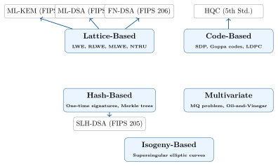

Chapter 1: Foundations of Post-Quantum Cryptography¶
1.1 The Quantum Threat to Classical Cryptography¶
Modern digital security rests on a small set of mathematical problems that are computationally intractable for classical computers. Public-key cryptography — the backbone of secure internet communication — relies on:
-
Integer Factorization: Breaking RSA requires factoring large semiprimes (e.g., RSA-2048).
-
Discrete Logarithm Problem (DLP): Breaking Diffie-Hellman and DSA over finite fields.
-
Elliptic Curve Discrete Logarithm Problem (ECDLP): Breaking ECDH and ECDSA.
These problems are hard for classical computers, requiring sub-exponential to exponential time. Quantum computers change this landscape fundamentally.
Shor’s Algorithm — The Existential Threat
Peter Shor’s 1994 quantum algorithm solves integer factorization and discrete logarithm in polynomial time \(O((\log N)^3)\) on a quantum computer. This breaks RSA, Diffie-Hellman, DSA, ECDH, and ECDSA completely. A cryptographically relevant quantum computer (CRQC) running Shor’s algorithm would render all currently deployed public-key cryptography useless.
1.1.1 Grover’s Algorithm and Symmetric Cryptography¶
Grover’s 1996 algorithm provides a quadratic speedup for unstructured search problems, impacting symmetric cryptography:
| Primitive | Classical Security | Quantum Security | Action |
|---|---|---|---|
| RSA-2048 | 112 bits | Broken (Shor) | Replace |
| ECDH P-256 | 128 bits | Broken (Shor) | Replace |
| ECDSA P-384 | 192 bits | Broken (Shor) | Replace |
| DH-3072 | 128 bits | Broken (Shor) | Replace |
| AES-128 | 128 bits | 64 bits (Grover) | Upgrade to AES-256 |
| AES-256 | 256 bits | 128 bits (Grover) | Retain |
| SHA-256 | 256 bits | 128 bits (Grover) | Retain (collision resistance halved) |
| SHA-384 | 384 bits | 192 bits (Grover) | Retain |
| SHA-3 | 256 bits | 128 bits (Grover) | Retain |
What Grover Means for AES
Grover’s algorithm reduces the effective key length of AES-128 from 128 bits to 64 bits — insufficient for long-term security. AES-128 should be upgraded to AES-256 in quantum-resilient deployments. AES-256 retains 128-bit quantum security, which is acceptable per NIST guidelines.
1.1.2 The “Harvest Now, Decrypt Later” (HNDL) Threat¶
One of the most urgent concerns in PQC migration is HNDL (also called “Store Now, Decrypt Later”):
-
An adversary intercepts and stores encrypted data today (e.g., VPN traffic, TLS sessions).
-
When a CRQC becomes available (estimates: 5–20 years), the adversary decrypts the stored ciphertext.
-
Data with long-term sensitivity (state secrets, health records, financial data, trade secrets) is compromised retroactively.
HNDL Timeline Urgency
Even if CRQCs arrive in 2035, data encrypted with RSA/ECDH today — in 2025 — can be stored and later decrypted. Any data requiring confidentiality beyond 10 years must be protected with PQC now. NIST, NSA (CNSA 2.0), and BSI all emphasize the urgency of the HNDL threat.
1.2 Mathematical Foundations¶
1.2.1 Lattice Theory¶
A lattice \(\mathcal{L}\) is a discrete additive subgroup of \(\mathbb{R}^n\). Given a basis matrix \(\mathbf{B} = [\mathbf{b}_1, \mathbf{b}_2, …, \mathbf{b}_n] \in \mathbb{R}^{n \times n}\), the lattice is:
Definition 1.1 (Shortest Vector Problem (SVP))
Given a lattice \(\mathcal{L}(\mathbf{B})\), find the shortest non-zero vector \(\mathbf{v} \in \mathcal{L}\) such that \(\|\mathbf{v}\|\) is minimized. SVP is NP-hard in general and conjectured to be hard even for quantum computers.
Definition 1.2 (Closest Vector Problem (CVP))
Given a lattice \(\mathcal{L}(\mathbf{B})\) and a target vector \(\mathbf{t} \in \mathbb{R}^n\), find the lattice point closest to \(\mathbf{t}\): \(\arg\min_{\mathbf{v} \in \mathcal{L}} \|\mathbf{v} - \mathbf{t}\|\). CVP is also NP-hard.
1.2.2 Learning With Errors (LWE)¶
LWE, introduced by Regev in 2005, is the computational foundation of most deployed PQC algorithms.
Definition 1.3 (Learning With Errors (LWE))
Let \(n, q\) be integers and \(\chi\) be an error distribution over \(\mathbb{Z}_q\). The LWE problem: given \(m\) samples \((\mathbf{a}_i, b_i) \in \mathbb{Z}_q^n \times \mathbb{Z}_q\) where \(b_i = \langle \mathbf{a}_i, \mathbf{s} \rangle + e_i \pmod{q}\) with \(\mathbf{s} \in \mathbb{Z}_q^n\) (secret) and \(e_i \leftarrow \chi\) (small error), find \(\mathbf{s}\).
The LWE problem is computationally equivalent (via quantum reduction) to worst-case lattice problems.
Example 1.1 (Small LWE Instance)
Let \(n=4\), \(q=17\), \(\mathbf{s} = (3, 1, 4, 1)\). Three LWE samples:
The error term \(e = -1\) is small relative to \(q=17\).
1.2.3 Ring-LWE and Module-LWE¶
Ring-LWE (RLWE) works over the polynomial ring \(R_q = \mathbb{Z}_q[X]/(X^n+1)\) where \(n\) is a power of 2. This allows efficient operations using the Number Theoretic Transform (NTT).
Module-LWE (MLWE) generalizes RLWE to module lattices over \(R_q^k\) for dimension \(k\). ML-KEM and ML-DSA use MLWE. Parameters:
| Variant | Ring | Key Operations | Performance | Examples |
|---|---|---|---|---|
| LWE | \(\mathbb{Z}_q^n\) | Matrix-vector | Slow | Regev, FrodoKEM |
| RLWE | \(R_q = \mathbb{Z}_q[X]/(X^n+1)\) | Polynomial | Fast (NTT) | NTRU, early Kyber |
| MLWE | \(R_q^k\) | Module-poly | Very Fast | ML-KEM, ML-DSA |
1.2.4 Number Theoretic Transform (NTT)¶
The NTT is the discrete Fourier transform over \(\mathbb{Z}_q\), enabling fast polynomial multiplication in \(O(n \log n)\) rather than \(O(n^2)\).
Definition 1.4 (NTT)
For \(q\) prime with \(q \equiv 1 \pmod{2n}\), let \(\omega\) be a primitive \(2n\)-th root of unity in \(\mathbb{Z}_q\). The NTT of \(\mathbf{a} = (a_0, …, a_{n-1})\) is:
Polynomial multiplication then reduces to pointwise multiplication in the NTT domain: \(\hat{c}_k = \hat{a}_k \cdot \hat{b}_k\), followed by inverse NTT.
For ML-KEM with \(n=256\), \(q=3329\), \(\omega = 17\) (primitive 512th root of unity mod 3329). The NTT reduces polynomial multiplication from \(\sim\)65,536 multiplications to \(\sim\)3,328 multiplications plus the NTT overhead.
1.2.5 Short Integer Solution (SIS)¶
The SIS problem underlies many signature schemes:
Definition 1.5 (SIS Problem)
Given a matrix \(\mathbf{A} \in \mathbb{Z}_q^{n \times m}\), find a short non-zero vector \(\mathbf{z} \in \mathbb{Z}^m\) such that \(\mathbf{A}\mathbf{z} = \mathbf{0} \pmod{q}\) and \(\|\mathbf{z}\| \leq \beta\).
SIS is as hard as worst-case lattice problems (via average-case to worst-case reduction).
1.2.6 Code-Based Mathematical Foundations¶
Linear error-correcting codes provide an alternative hard problem family:
Definition 1.6 (Syndrome Decoding Problem (SDP))
Given a parity-check matrix \(\mathbf{H} \in \mathbb{F}_2^{(n-k) \times n}\), a syndrome \(\mathbf{s} \in \mathbb{F}_2^{n-k}\), and a weight bound \(w\), find \(\mathbf{e} \in \mathbb{F}_2^n\) with Hamming weight \(\text{wt}(\mathbf{e}) \leq w\) such that \(\mathbf{H}\mathbf{e}^T = \mathbf{s}\). SDP is NP-complete.
1.2.7 Hash-Based Security¶
Hash-based schemes rely solely on the security of the underlying hash function (e.g., SHA-256, SHAKE-256), making them quantum-resistant via Grover’s algorithm analysis: an \(n\)-bit preimage search takes \(O(2^{n/2})\) quantum operations (acceptable for \(n=256\)).
1.3 Security Levels¶
NIST defines five security levels for PQC algorithms:
| Level | Classical | Classical Equivalent | Quantum Equivalent |
|---|---|---|---|
| 1 | AES-128 exhaustive key search | 128-bit (classical) | 64-bit (Grover) |
| 2 | SHA-256/SHA3-256 collision | 128-bit collision | 85-bit quantum collision |
| 3 | AES-192 exhaustive key search | 192-bit | 96-bit |
| 4 | SHA-384/SHA3-384 collision | 192-bit collision | 128-bit quantum collision |
| 5 | AES-256 exhaustive key search | 256-bit | 128-bit |
Security Level Selection
Security Level 1 (ML-KEM-512) is adequate for most applications. Classified/government data often requires Level 3 or 5. The NSA CNSA 2.0 mandates Level 5 (ML-KEM-1024, ML-DSA-87) for classified national security systems.
1.4 Cryptographic Primitives: KEM and DSS¶
1.4.1 Key Encapsulation Mechanism (KEM)¶
A KEM is a three-algorithm system:
Algorithm: KEM Abstract Syntax
-
\((\mathit{ek}, \mathit{dk}) \leftarrow \textsc{KeyGen}()\) // Encapsulation key (public) + Decapsulation key (private)
-
\((\mathit{K}, \mathit{c}) \leftarrow \textsc{Encaps}(\mathit{ek})\) // Shared secret \(K\) + Ciphertext \(c\)
-
\(\mathit{K}' \leftarrow \textsc{Decaps}(\mathit{dk}, \mathit{c})\) // Recover shared secret; \(K' = K\) if valid
KEMs replace public-key encryption in key establishment. The shared secret \(K\) is used to derive symmetric keys via a KDF (e.g., HKDF).
1.4.2 Digital Signature Scheme (DSS)¶
Algorithm: Digital Signature Scheme Abstract Syntax
-
\((\mathit{pk}, \mathit{sk}) \leftarrow \textsc{KeyGen}()\) // Verification key (public) + Signing key (private)
-
\(\sigma \leftarrow \textsc{Sign}(\mathit{sk}, M)\) // Signature \(\sigma\) over message \(M\)
-
\(b \leftarrow \textsc{Verify}(\mathit{pk}, M, \sigma)\) // Accept (\(b=1\)) or Reject (\(b=0\))
1.5 NIST PQC Standardization History¶
| Date | Event |
|---|---|
| December 2016 | NIST calls for proposals; 82 submissions received |
| January 2019 | 26 Round 2 candidates announced |
| July 2020 | 7 Round 3 finalists + 8 alternates selected |
| July 2022 | 4 algorithms selected for standardization (CRYSTALS-Kyber, CRYSTALS-Dilithium, FALCON, SPHINCS+) |
| August 2023 | Draft FIPS 203/204/205 released for comment |
| August 2024 | FIPS 203, FIPS 204, FIPS 205 finalized |
| September 2023 | Additional signatures Round 2 (14 candidates) announced |
| March 2025 | HQC selected as 5th PQC standard (code-based KEM) |
| 2025–2026 | Draft FIPS 206 (FN-DSA, from FALCON) expected |
| 2026+ | Additional signature standard(s) expected from Round 2 process |
1.6 Algorithm Families Overview¶
Post-quantum cryptography encompasses five principal algorithm families:

| Family | Strengths | Weaknesses | Key Sizes | Status |
|---|---|---|---|---|
| Lattice-Based | Fast, small keys, KEM+Sign | Newer analysis | Small | Standardized |
| Code-Based | 50-year security history, KEM | Large public keys | Large | Standardized (HQC) |
| Hash-Based | Conservative, stateless | Large signatures | Small pk, Large sig | Standardized |
| Multivariate | Fast signing, small sig | Large public keys | Large | Research |
| Isogeny-Based | Small keys | SIDH/SIKE broken; slow | Very small | Research only |
1.7 Summary¶
-
Shor’s algorithm breaks RSA, DH, ECDH, and ECDSA in polynomial quantum time — replacing these is mandatory.
-
Grover’s algorithm halves the effective key length of symmetric ciphers — upgrade AES-128 to AES-256.
-
The HNDL threat is immediate: encrypted data collected today can be decrypted when CRQCs arrive.
-
PQC security rests on hard mathematical problems: SVP/CVP (lattices), SDP (codes), MQ (multivariate), and hash function properties.
-
NIST finalized FIPS 203 (ML-KEM), FIPS 204 (ML-DSA), and FIPS 205 (SLH-DSA) in August 2024; HQC selected as the 5th algorithm in March 2025.
-
Security levels 1–5 correspond to AES-128 through AES-256 equivalent quantum security.